Qui n'a jamais regretté d'avoir supprimé des fichiers alors qu'ils étaient toujours utiles ? :euh:
Ce petit tuto va vous apprendre à récupérer vos fichiers effacés en quelques minutes.
Lorsque vous supprimez un fichier de votre disque, c'est comme si vous coupiez seulement le lien qui permettait d'accéder à ce fichier. Si on allait directement voir sur le disque, on retrouverait le fichier intact. Attention cependant, le fichier ne reste "récupérable" que lorsque le système d'exploitation n'a pas réécrit de nouvelles données sur son emplacement. Ne vous attendez donc pas à retrouver des fichiers très vieux !
Il suffit donc d'utiliser un logiciel qui va aller "fouiller" le disque pour retrouver les fichiers effacés. J'ai nommé : PhotoRecovery ! :)
PhotoRec est un programme conçu pour récupérer les images perdues sur des cartes mémoire d'appareil photo. D'où son nom "Photo Recovery" (abrégé en PhotoRec). Ce programme a été créé par Christophe Grenier et rencontre un franc succès (plus de 1000 téléchargements / semaine).
Mais PhotoRec peut bien sûr récupérer d'autres fichiers que des images, tels les vidéos, les fichiers textes, etc.
Pour installer ce programme, rien de très compliqué. Tapez ceci dans la console :
sudo apt-get install testdisk
Pour ceux qui préfèrent l'installer depuis une archive, voici le lien : cliquez ici.
Pour lancer le programme, ouvrez votre console préférée et tapez ceci :
sudo photorec
Une fois le programme ouvert, voici ce qui apparaît :
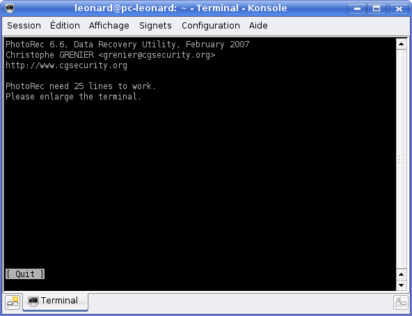
Photorec ne peut pas s'afficher car la fenêtre est trop étroite. Il suffit de l'agrandir et vous voyez alors apparaître la liste de vos disques durs :
Il vous suffit de choisir le disque dur sur lequel se trouvaient vos fichiers effacés et d'appuyer sur Enter.
Une fois le disque sélectionné, Photorec va vous demander de quel type est la partition :
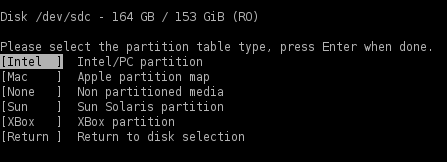
Choisissez "[Intel]" si vous utilisez Windows ou Linux. Si par contre vous utilisez Mac, sélectionnez "[Mac]".
Une fois ceci fait, vous allez devoir choisir la partition sur laquelle Photorec va rechercher les fichiers effacés.
On ne l'avait pas déjà sélectionnée au début ?
Non, vous aviez sélectionné le périphérique (disque dur, clé USB, appareil photo, ...).
Voici donc ce qui s'affichera à l'écran (vous n'aurez pas les mêmes partitions que moi) :
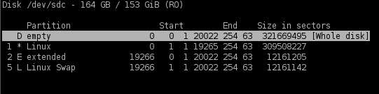
Les options de fichiers
Pour avoir accès aux options de fichiers, sélectionnez File Opt, à côté de Options.
Vous avez alors ceci qui s'affiche :
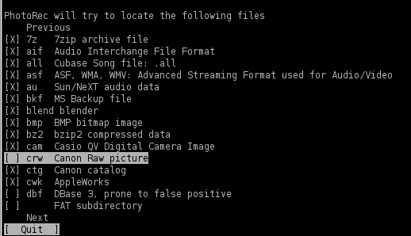
C'est une liste de tous les formats de fichiers que PhotoRec peut récupérer. Pour ne pas récupérer de fichiers inutiles, ne sélectionnez que la ou les extension(s) qui vous intéressent.
Pour "décocher" une extension, lorsqu'elle est sélectionnée, appuyez sur la flèche de droite.
Lorsque vous avez sélectionné les extensions qui vous intéressaient, revenez à l'écran précédent grâce à Quit et sélectionnez Search pour rechercher les fichiers. Vous verrez alors ceci apparaître :
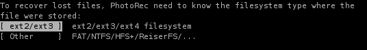
Si c'est sur une partition Linux que vous recherchez des fichiers, sélectionnez [EXT2/EXT3], sinon, prenez [Other].
PhotoRec vous demande alors s'il doit rechercher les fichiers uniquement dans l'espace libre du disque dur ou s'il est nécessaire de fouiller l'entièreté du disque à la recherche des fichiers disparus. Normalement, vous n'avez que peu de chances de retrouver des fichiers perdus dans un espace occupé du disque dur. Pour accélérer la recherche, vous pouvez laisser la recherche s'effectuer dans les secteurs libres.
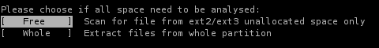
PhotoRec va alors vous demander dans quel répertoire il doit placer les fichiers récupérés. Sélectionnez le répertoire que vous souhaitez et appuyez sur Y pour valider.
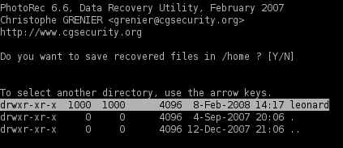
PhotoRec recherche alors tous les fichiers effacés du ou des type(s) sélectionnés.
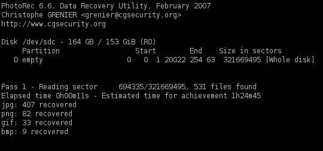
À la fin du processus, vous trouvez un (ou plusieurs, parfois il y en a 3) fichiers avec les images qui ont été retrouvées.
Grâce aux flèches de votre clavier, sélectionnez l'onglet [Option] (en bas de l'écran) et validez. Vous obtenez ceci :
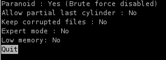
Paranoïd : cette option vérifie les fichiers et ne sauvegarde que les fichiers entiers. Les fichiers sont "cassés" car d'autres données ont été réécrites dessus et ne seront donc pas récupérées. Allow partial last cylinder : cette option modifie la façon dont la géométrie du disque est déterminée. N'y touchez pas.
Pour mieux comprendre ce qu'est la géométrie d'un disque, voici quelques schémas.
Un disque dur est composé de plusieurs "disques" appelés "plateaux". Chaque "piste" de chaque "plateau" forme un cylindre.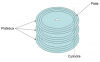
Chaque "piste" est elle aussi découpée en "secteurs" où sont stockées les données.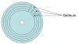
L'option Allow partial cylinder permet donc de modifier la façon dont PhotoRec croit que les cylindres du disque sont arrangés !
Keep corrupted files : sauvegarde les fichiers corrompus ou incomplets si jamais vous souhaitez essayer de les réparer avec d'autres méthodes, comme Object-Fix-Zip.
Expert mode : permet de forcer la taille du bloc (les "blocs" de données sur le disque : voir schéma ci-dessus).
Low memory : n'activez cette option que si votre système n'a pas beaucoup de mémoire et risque de planter durant la récupération des fichiers.
Pour valider les changements, sélectionnez Quit.
Voilà : supprimer une image n'est plus une fatalité. Grâce à ce petit programme très pratique, vous pouvez retrouver en quelques clics tous vos fichiers perdus. ^^

{kind=link}
{kind=link}